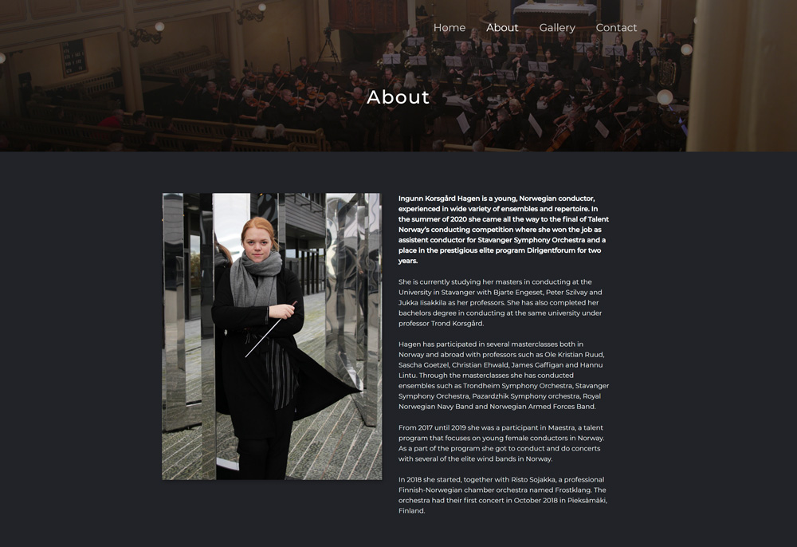
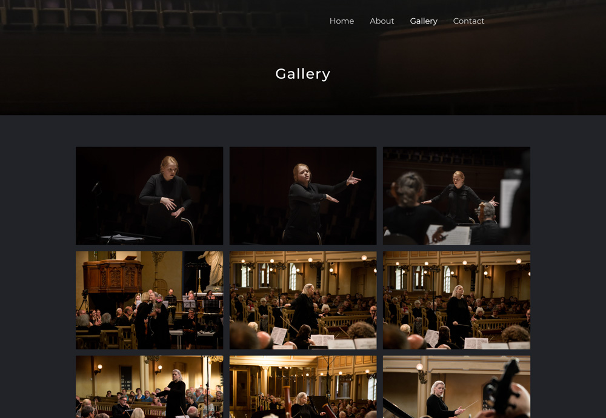
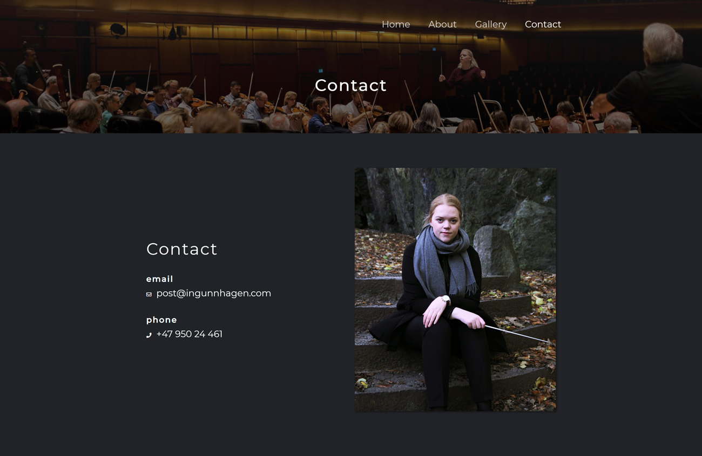

Portfolio Website
This website was created for an orchestra conductor. The site was created using Vue.js and uses WordPress as a REST API so the client can add images to the gallery. The goal of this website is to display information about the conductor and pictures or videos of performances. The website also gives information to possible recruiters who might want to hire her.
Below you will see some information about the different pages and a link to the live website.
About
The about page gives a description of some of the experience and education the conductor has. It also displays a picture of the conductor. The about page is there to give the reader an understanding of how qualified the conductor is.
Gallery
The gallery page allows the reader to find pictures of the conductor while doing their craft. Pictures can be from rehearsals, masterclasses or concerts. This page could also be used to display videos of concerts.
Contact
The contact page is there to give information to potential recruiters on how to contact the individual. This page has the information laid out clearly so that it is easy to find.
